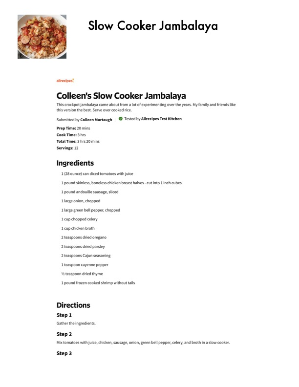

Slow Cooker Jambalaya

Original cookbook page 530
Ingredients
- 1 (28 ounce) can diced tomatoes with juice
- 1 pound skinless, boneless chicken breast halves - cut into 1 inch cubes
- 1 pound andouille sausage, sliced
- 1 large onion, chopped
- 1 large green bell pepper, chopped
- 1 cup chopped celery
- cup chicken broth
- 2 teaspoons dried oregano
- 2 teaspoons dried parsley
- 2 teaspoons Cajun seasoning
- 1 teaspoon cayenne pepper
- Ya teaspoon dried thyme
- 1 pound frozen cooked shrimp without tails
Instructions
- Step 2 Mix tomatoes with juice, chicken, sausage, onion, green bell pepper, celery, and broth in a slow. Step 3
Recipe #530 from collection